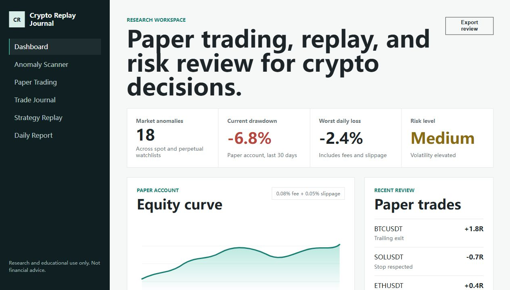
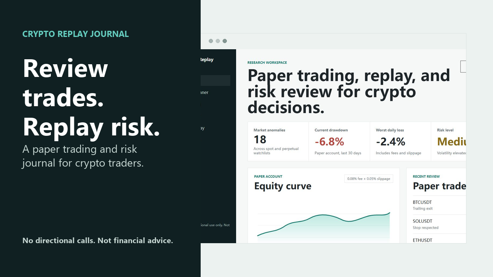

Open-source research dashboard
Review crypto trades without turning alerts into advice.
Paper trading, candle-by-candle strategy replay, risk journaling, and daily review reports for disciplined crypto research.

Alerts describe anomalies, volatility, and risk context. They do not provide trade instructions.
Fees, slippage, drawdown, and position-risk assumptions are visible by default.
Users can review whether a trade failed because of the setup, the exit, the market regime, or behavior.
Product surface
Built for review loops, not hype loops.
- ScanDetect unusual moves and high-volatility context.
- SimulatePaper trade entries, stops, targets, fees, and slippage.
- ReplayCompare fixed target, trailing exit, and no-stop scenarios.
- JournalTag FOMO, overtrade, good exits, and broken rules.
- ReportGenerate daily market and decision-review artifacts.
Demo video asset
A visual story for Product Hunt, GitHub, X, and Reddit.
The demo focuses on the safer product promise: unusual market moves, paper trading, exit review, behavior tags, and daily reports.
Open storyboard
Research only
For research and educational use only. Not financial advice. Crypto markets are risky, volatile, and can result in loss of capital. Paper trading, backtests, and historical replays do not prove future live performance.